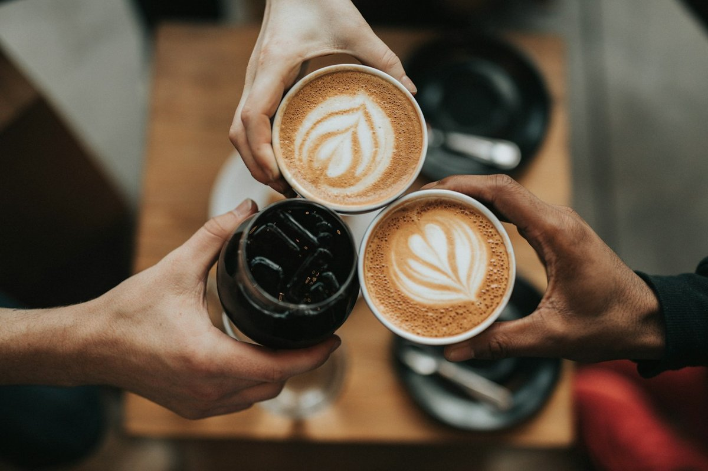
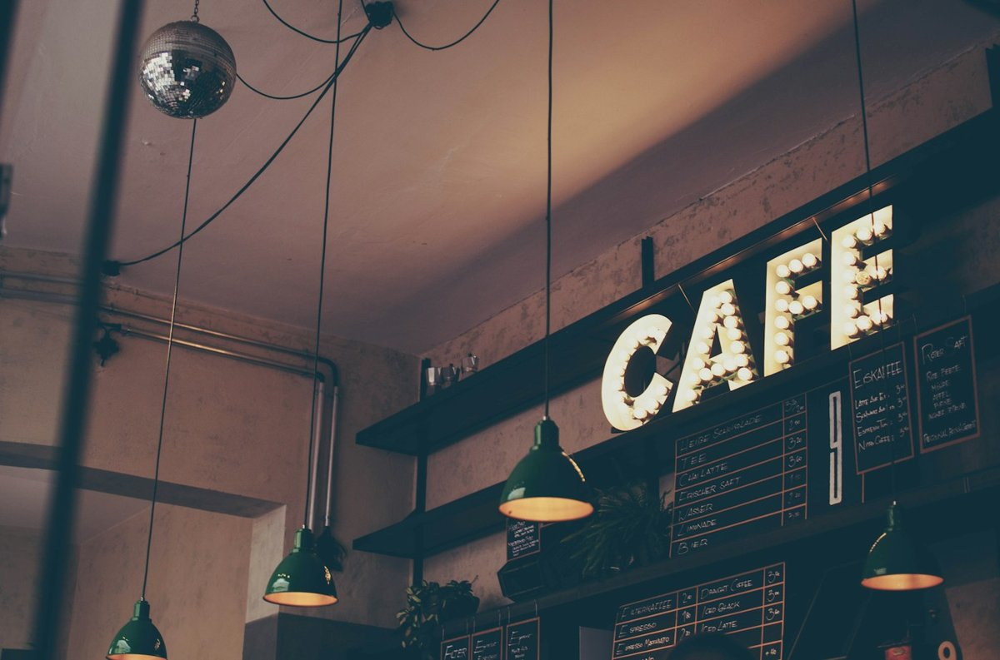

Капучино
Еспресо та молочна пінка · 250 мл
75 ₴
Кав’ярня у Львові
Еспресо, тепла випічка й трохи часу для себе. Завітай на ранкову каву або забери улюблений напій із собою.
Переглянути менюЩодня 08:00–20:00 · Львів

01
Від насиченого еспресо до ніжного лате.
02
Круасан або десерт для маленької перерви.
03
Замовляй біля стійки та продовжуй свій день.

Місце для твоєї паузи
«Пауза» — концепція невеликої міської кав’ярні. Тут можна почати ранок із кави, зустрітися з другом або зробити коротку перерву між справами.
Обирай звичний смак або попроси поради біля стійки. У нашому меню — зрозумілі напої та випічка без довгого очікування.
Трохи часу для себе
Обери напій, знайди затишне місце й дозволь собі коротку паузу. Кава та розмова — іноді цього достатньо.
Обрати свою кавуВід зерна до горнятка
Бариста готує напій, а ти обираєш, якою буде твоя наступна перерва. Улюблений смак — у кожному горнятку.
Завітати на кавуФонове відео можна призупинити внизу секції.
Три прості кроки
01
Знайди напій і випічку в меню.
02
Скажи баристі свій вибір та обсяг.
03
Залишайся в залі або бери із собою.
Перед візитом
Так. Усі напої можна замовити у стакані із собою.
Так. Додай рослинне молоко до напою за 15 ₴.
Обери напій на сайті та замов його біля стійки в кав’ярні.